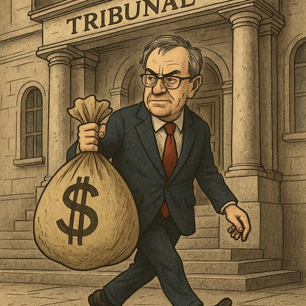

PORTUGAL: O PAÍS PARALISADO PELA CORRUPÇÃO - COMO CHEGÁMOS AQUI E COMO SAIR? 🇵🇹
Publicado em 2025-07-09 10:15:41

🇵🇹
Introdução
Portugal é um país de contrastes: um povo trabalhador, uma história gloriosa, mas uma realidade política e económica marcada por corrupção sistémica, estagnação e dependência externa. Como chegámos a este estado? Quem nos empurrou para esta crise moral? E, mais importante: como limpar a casa e recusar a resignação?
1. COMO CHEGÁMOS AQUI?
A. O "Sistema" que Nunca Mudou (1974-2024)
- Pós-25 de Abril: A democracia trouxe liberdade, mas também partidarização do Estado, com PS e PSD a alternarem no poder sem verdadeiras reformas.
- Troika (2011): O resgate financeiro expôs anos de má gestão, dívida insustentável e negociatas, mas os responsáveis nunca pagaram.
- Casos Marquês, Sócrates, BES, TAP, etc.: Todos seguiram o mesmo padrão: corrupção à vista de todos, justiça lenta e impunidade garantida.
B. Os 3 Pilares da Corrupção Portuguesa
- "Cunha" e Compadrio: Empregos públicos, licitações e negócios dependem de quem conheces, não de mérito.
- Justiça Ineficaz: Processos que arrastam 10+ anos, prescrições frequentes e penas leves.
- Conformismo Social: Muitos portugueses ainda aceitam o "é assim mesmo", normalizando a corrupção no dia a dia.
2. PORQUE É QUE ISTO TEM DE MUDAR?
A. O Custo da Corrupção
- Empobrecimento geral: Desvio de milhões = menos hospitais, escolas e infraestruturas.
- Fuga de talentos: Os jovens emigram porque não veem futuro num país de favorecimentos.
- Dependência eterna: Sem combate sério à corrupção, Portugal nunca será competitivo, continuando a viver de fundos europeus e turismo precário.
B. A Alternativa é a Decadência
Se nada mudar, o futuro será:
- Mais austeridade (quando a UE cortar fundos).
- Mais desigualdade (os ricos do sistema vs. o povo a pagar a crise).
- Mais descredibilização internacional (Portugal visto como um "Estado falhado soft").
3. COMO LIMPAR PORTUGAL?
Soluções Imediatas
✔ Justiça Expedita: Tribunais especializados em corrupção, confisco de bens e penas duras.
✔ Fim das Imunidades: Nenhum político ou juiz pode estar acima da lei.
✔ Transparência Radical: Publicação online de todos os contratos públicos e patrimónios de governantes.
Mudanças Estruturais
✔ Reforma Eleitoral: Fim do bipartidarismo (PS/PSD) com círculos uninominais.
✔ Educação Cívica: Ensinar nas escolas o valor da honestidade e da responsabilidade política.
✔ Economia Produtiva: Acabar com o clientelismo estatal, apoiando PMEs inovadoras em vez de "empresas amigas".
CONCLUSÃO: A NOSSA ESCOLHA
Portugal está num ponto de ruptura. Ou aceitamos o declínio como inevitável, ou exigimos mudanças radicais.
- Não faltam exemplos (Geórgia, Singapura) de países que limparam a corrupção em uma geração.
- Não faltam soluções – falta vontade política e pressão social.
🔴 O desafio é teu também.
- Vota com consciência.
- Denuncia sem medo.
- Exige mais, sempre.
Porque Portugal merece mais do que isto. E porque nós, os que não nos vendemos, somos a maioria.
✊ A mudança começa aqui. Agora.
PARTILHA ESTA MENSAGEM. O SILÊNCIO É CÚMPLICE.
📢 #LimparPortugal | #ChegaDeCorrupção